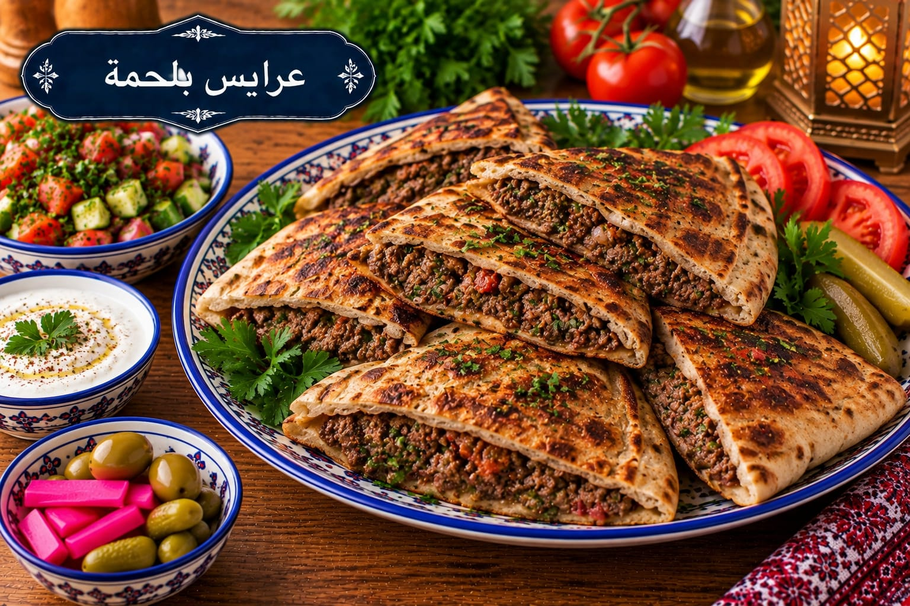

عرايس بلحمة
خبز محشو باللحم ومتبل

مقادير عرايس بلحمة
- 5 أرغفة خبز عربي
- 600 غ لحم مفروم
- 1 بصلة صغيرة مفرومة ناعمًا
- 1 طماطم صغيرة مصفاة من الماء
- ½ كوب بقدونس
- 1½ ملعقة صغيرة ملح
- 1 ملعقة صغيرة بهار مشكل
- ½ ملعقة صغيرة فلفل أسود
- 2 ملعقة كبيرة زيت زيتون
طريقة عمل عرايس بلحمة
- اخلطي اللحم والبصل والطماطم والبقدونس والملح والبهارات جيدًا.
- افتحي الخبز ووزعي طبقة رقيقة ومتساوية من اللحم حتى يصل إلى الأطراف.
- ادهني الوجهين بقليل من زيت الزيتون.
- اشوي العرايس في فرن 210°م أو على شواية متوسطة مع التقليب حتى يصبح الخبز مقرمشًا وينضج اللحم تمامًا، نحو 15–20 دقيقة.